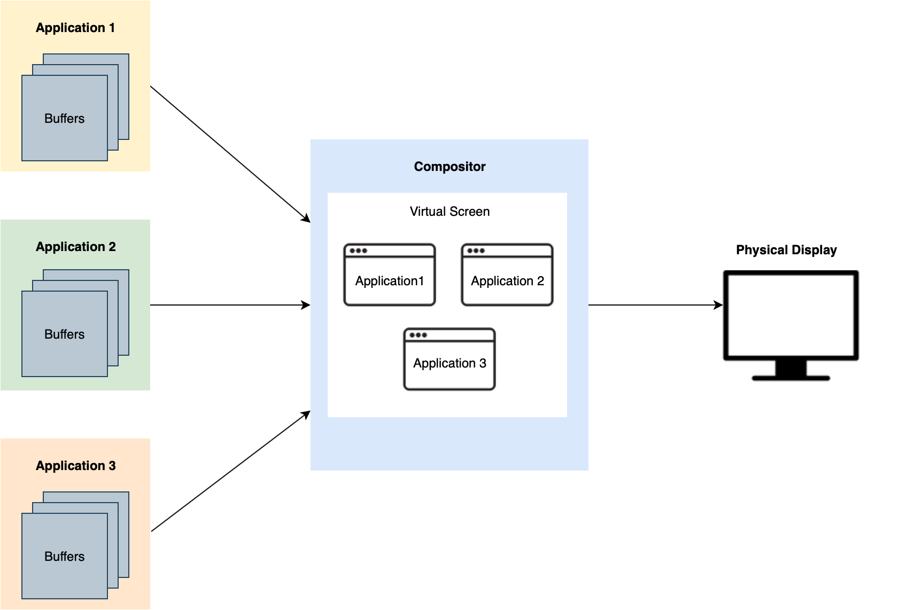
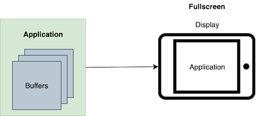
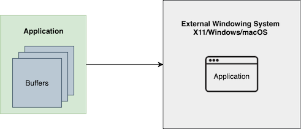

Wayland and Qt
Wayland was developed as an alternative to X11 on Linux. Its main purpose is to manage how the content of applications is displayed together on a shared screen, and how a user can interact with multiple applications sharing the same input devices.
This role in an operating system is often called a display server. The Wayland display server may also sometimes be called a compositor and a window manager, referring to specific tasks it performs as part of its duty.
In the following, we will give a short introduction to Wayland and its role in Qt. For more details and background about Wayland itself, refer to the official documentation.
What is a Display Server
The display server is the part of the operating system which manages the screen real estate and other shared resources. On a typical desktop system, you may have many independent applications running at the same time, each expecting to be able to render graphics to the screen and receive input.
The display server is a link between the application and shared resources such as a screen and input devices. A typical display server on a desktop system will place application content into distinct rectangular "windows", which can be moved and resized by the user. The display server makes sure that the application content is displayed at the right position on the screen, that the active window receives input from the keyboard, that overlapping windows are drawn in the right order, and so on.
On other types of systems, the display server may be more restrictive. If the screen is an instrument panel in a car, or the control panel of a fork lift, for instance, then moving and resizing windows may not be desirable. Instead, each application may be locked into a pre-defined area of the screen and receive input from preassigned devices.
Either way, as long as there are multiple isolated processes competing for the same resources, a display server is useful.
The Role of Wayland
The Wayland name may refer to several related items:
- A set of protocols for communicating between a display server and its clients.
- A library written in C with functions for inter-process communication, serving as the foundation for implementing said protocols.
- An XML-based language for extending the protocol, as well as a tool for generating binding code in C from such extensions.
Qt provides implementations for both the client and the server side of the protocol.
Normal Qt applications can be run as clients on a Wayland display server by selecting the "wayland" QPA plugin (this is the default on certain systems). In addition, the Qt Wayland Compositor module can be used to develop the display server itself.
Qt also has convenience functionality for easily extending the Wayland protocols with new interfaces.
Wayland and Other Technology
On the Linux desktop, Wayland is an alternative to X11 and related extensions. It is a compositing display server at its core, and the term "compositor" is often used to describe the Wayland server. This means that clients will render content into an off-screen buffer, which will later be "composited" with other clients on the screen, allowing window effects such as drop shadows, transparency, background blurring, and so on.
One important design principle of the original X11 protocols is that the display server can be running on a thin terminal with only a screen and input devices. Its clients would then be running on remote systems with more processing power, communicating with the server over a network connection.
In contrast, Wayland is designed around the observation that, in modern setups, the client and display server are usually running on the same hardware. Distributed computing, remote storage and remote desktop functionality are usually handled through other mechanisms. Designing this into the protocol enables sharing graphics memory between the client and the server: When the compositor is placing client content on screen, it can simply copy it from one part of graphics memory to another.
For this to work optimally, the graphics driver must support Wayland. This support is provided through an extension to EGL which is called EXT_platform_wayland.
Note: Qt Wayland also supports compositing on systems where EXT_platform_wayland is not supported, either through XComposite or by copying application content to shared CPU memory. But for optimal performance, we recommend systems with driver support.
X11 has been extended to support features such as composition and direct rendering, but Wayland is designed around this use case from the ground up. It also aims to be small and extensible, in contrast to the complexity that has developed in X11 over time.
Extensibility and Embedded Systems
Since Wayland has a minimal core and is easily extensible, it is an ideal tool when building embedded Linux platforms.
Desktop-style window system features, for instance, are not part of the core protocol. Instead, Wayland has a special category of protocol extensions called "shells" that provide a way for the client to manage its surfaces. Desktop-style features are provided through a shell called XDG Shell. For other types of systems, a more specialized (and perhaps more restrictive) "shell" can be used. For instance, when making In-Vehicle Infotainment systems, the IVI Shell might be preferable.
The Wayland server broadcasts a list of its supported protocols (or "interfaces") when a client connects, and the client can bind to the ones it wants to use. This can be any of the standard interfaces, but new extensions are also easy to add. Wayland defines an easily understandable XML format for defining protocols and the waylandscanner tool can be used to generate C code from these. (In Qt, we also have qtwaylandscanner which generates additional C++ binding code.)
After a client binds to an interface, it can make "requests" to the server and the server can send "events" to the client. The requests and events, as well as their arguments, are defined in the XML file describing the protocol.
For building a platform from scratch, when you control the code of both server and clients, adding extensions is an easy and controlled way of adding operating system features.
Multi-Process or Single-Process
When building a simple embedded platform with Qt, a perfectly viable option is to have all parts of the UI running in a single process. However, as the system becomes more complex, you may want to consider a multi-process system instead. This is where Wayland comes in. With Qt, at any point in your development process, you can choose to switch between single-process and multi-process.
Benefits of Multi-Process
The following diagrams illustrate the difference between multi-process and single-process systems.

Multi-Process Client Architecture

Single Process Client Architecture
The Qt Wayland Compositor module is ideal for creating the display server and compositor in multi-process systems on embedded Linux. The use of multi-process has the following benefits:
| Stability | |
|---|---|
| Easier to recover when clients hang or crash | If you have a complex UI, then multi-process is useful because if one part of the UI crashes, it doesn't affect the entire system. Similarly, the display won't freeze, even when one client freezes. Note: If your client is mandated by law to render safety-critical information, consider using Qt Safe Renderer Overview. |
| Protection against possible memory leaks | In a multi-process system, if one client has a memory leak and consumes lots of memory, that memory is recovered when that client exits. In contrast with single-process, the memory leak remains until the entire system restarts. |
| Security |
|---|
| In a single-process system, all clients can access each other's memory. For example, there's no isolation for sensitive data transfer; every line of code must be equally trustworthy. This isolation is there, by design, in multi-process systems. |
| Performance |
|---|
| If you have a CPU with multiple cores, a multi-process system can help distribute the load evenly across different cores, making more efficient use of your CPU. |
| Interoperability |
|---|
| You can interface with non-Qt clients in a multi-process system, as long as your clients understand Wayland or X11. For example, if you use gstreamer for video or if you want to use a navigation application built with another UI toolkit, you can run these clients alongside your other Qt-based clients. |
Trade-offs of Multi-Process
When going from single-process to multi-process, it is important to be conscious of the following trade-offs:
- Increased video memory consumption
- Increased main memory consumption
- Repeated storage of graphical resources
- Input latency
| Increased video memory consumption |
|---|
| This can be a constraint for embedded devices. In multi-process, each client needs to have its own graphics buffer, which it sends to the compositor. Consequently, you use more video memory compared to the single-process case: where everything is drawn at once and there is no need to store the different parts in intermediary buffers. |
| Increased main memory consumption |
|---|
| Apart from some extra overhead at the OS level, running multiple clients may also use more main memory as some parts need to be duplicated once per client. For example, if you run QML, each client requires a separate QML engine. Consequently, if you run a single client that uses Qt Quick Controls, it's loaded once. If you then split this client into multiple clients, you're loading Qt Quick Controls multiple times, resulting in a higher startup cost to initialize your clients. |
| Repeated storage of graphical resources |
|---|
| In a single-process system, if you're using the same textures, background, or icons in many places, those images are only stored once. In contrast, if you use these images in a multi-process system, then you have to store them multiple times. In this case, one solution is to share graphical resource between clients. Qt already allows sharing image resources in main memory across processes without involving Wayland. Sharing GPU textures across processes, on the other hand, requires more intricate solutions. With Qt, such solutions can be developed as Wayland extension protocols and with QQuickImageProvider, for instance. |
| Input-to-photon latency |
|---|
| On a single-process system, the application accesses the main frame buffer directly. This means that the latency between input events and reflecting them on screen can be minimized in such a setup. On a multi-process system, the application content has to be triple-buffered to ensure the client isn't drawing into the buffers while they are simultaneously being read by the server, as that would cause tearing. This means that there is an implicit latency in a multi-process system. |
Why Use Wayland Instead of X11 or Custom Solutions
As described earlier, X11 is not an optimal match for typical system setups today. It is quite large and complex, and it lacks customizability. In fact, it is difficult to run a client fluidly with X11, and reach 60 fps without tearing. Wayland, in contrast, is easier to implement, has better performance, and contains all the necessary parts to run efficiently on modern graphics hardware. For embedded, multi-process systems on Linux, Wayland is the standard.
However, if you are working with old hardware or legacy applications, then Wayland may not be a good option. The Wayland protocol is designed with security and isolation in mind, and is strict/conservative about what information and functionality is available to clients. While this leads to a cleaner and more secure interface, some functionality that legacy applications expect may no longer be available on Wayland.
Particularly, there are three common use cases where Wayland may not be the best option:
- The hardware or platform is old and only supports X11; in which case you have no choice.
- You have to support legacy applications that depend on features that are absent in the Wayland protocol for security and simplicity.
- You have to support legacy applications that use a UI toolkit that doesn't run on Wayland at all. In some cases, you may be able to work around this by running those applications on XWayland instead.
Back when X11 was very popular, developers wrote their own custom solutions to circumvent X11 issues. Older Qt versions had the Qt Windowing System (QWS), which is now discontinued. Today, most of these use cases are covered by Wayland, and custom solutions are becoming less and less common.
What Qt Wayland Offers
For Clients
Qt clients can run on any Wayland compositor, including Weston, the reference compositor developed as part of the Wayland project.
Any Qt program can run as a Wayland client (as part of a multi-process system) or a standalone client (single-process). This is determined on startup, where you can choose between the different backends. During the development process, you can develop the client on the desktop first, then test it on the target hardware later. You don't need to run your clients on the actual target hardware all the time.

Single-Process Client Development
If you develop on a Linux machine, you can also run the compositor within a window on your development machine. This lets you run clients in an environment that closely resembles the target device. Without rebuilding the client, you can also run it with -platform wayland to run it inside the compositor. If you use -platform xcb (for X11), you can run the client on the desktop. In other words, you can start developing your clients before the compositor is ready for use.
For Servers
The server, or compositor, connects to the display and shows the contents of each client on the screen. The compositor handles input and sends input events to the corresponding client. In turn, each client connects to the compositor and sends the content of its windows. It's up to the compositor to decide:
- How and where to show the content
- Which content to show
- What to do with the different client graphics buffers
This means, it's up to the compositor to decide what a multi-process system is. For instance, the clients could be part of a 3D scene with windows on the walls, on a VR system, mapped to a sphere, and so on.
The Qt Wayland Compositor is an API for building your own compositor. It gives you full freedom to build a custom compositor UI and manage the windows of various clients. You can combine both Qt Quick and QML with the Qt Wayland Compositor to create impressive, imaginative UIs. For more information, see Qt Wayland Compositor.
Qt also provides powerful and user-friendly APIs to implement Wayland extensions and use them from QML or C++.